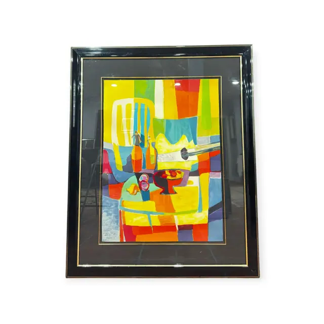
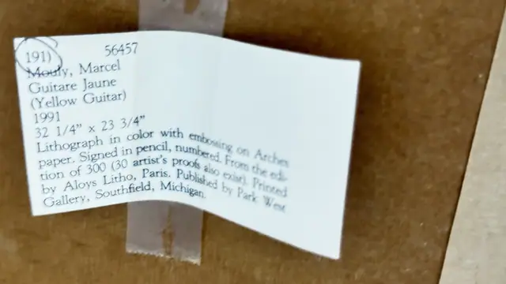

Paintings & Prints
Marcel Mouly Guitare Jaune Colour Lithograph, Mouly, Marcel, Signed in the Plate, Framed, 1991
Marcel Mouly · 1991
Price Upon Request


About the Item
Mouly, Marcel. A boldly coloured cubist still life: a yellow guitar and a second, ghostly white one are fractured across a grid of flat planes in lemon yellow, vermilion, cobalt, emerald and violet, with a dark bottle, a stemmed bowl of fruit and a chequered table edge locked into the design. Colour is laid in broad opaque blocks with visible lithographic grain and embossed relief in the lighter passages, on heavy Arches paper with a soft edge. Signed within the image at the lower right. Medium: colour lithograph with embossing on Arches paper. Signed lower right within the image, reading "M. Mouly". Edition: from the edition of 300 (30 artist's proofs also exist), per the label; the pencil number itself was not photographed. Accompanied by a certificate: Printed inventory label taped to the backing board giving artist, title, date 1991, size 32 1/4 x 23 3/4 in, medium, edition of 300 and printer Aloys Litho, Paris. Inscribed on the reverse or mount: 191) 56457; Mouly, Marcel; Guitare Jaune; (Yellow Guitar). Condition: Colours fresh and unfaded; sheet clean. Some reflection and a dust film on the glossy black frame. No visible foxing, ripple or damage.
About the Artist
Marcel Mouly (1918-2008) was a French painter of the School of Paris whose interiors, harbours and guitars glow with saturated blues and reds. His lithographs were printed with the leading Paris workshops.
Details
- Creator:
- Marcel Mouly
- Creation Year:
- 1991
- Dimensions:
- Height: 46.5 in (118.11 cm)
Width: 38.0 in (96.52 cm)
outside of frame - Medium:
- colour lithograph with embossing on Arches paper
- Edition:
- from the edition of 300 (30 artist's proofs also exist), per the label; the pencil number itself was not photographed
- Period:
- 20Th
- Condition:
- Offered in the condition shown in the photographs.
- Reference Number:
- VO-253
- Documentation:
- Printed inventory label taped to the backing board giving artist, title, date 1991, size 32 1/4 x 23 3/4 in, medium, edition of 300 and printer Aloys Litho, Paris.
- Gallery Location:
- Park West Gallery, Southfield, Michigan